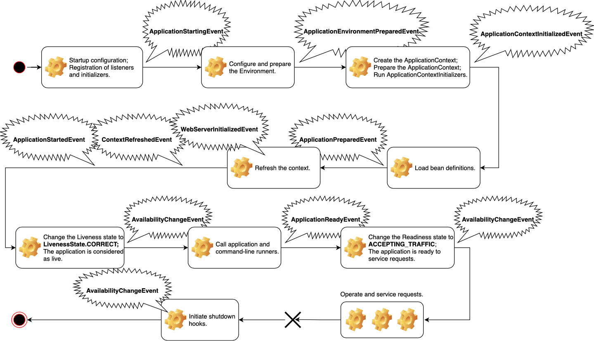

What Happens When You Run a Spring Boot Application?
Note:
This will be focused mostly towards people with intermediate experience with Spring Boot.
If you're intermediate or advanced, you will likely be familiar with some, if not all, of the concepts I'll cover and
demonstrate. I'm aiming for the middle - the people who have used Spring Boot for a while, but often times feel like they're programming by coincidence - it works, but do I know why it works?
Do I know what just happened when I copied this SO answer?

Q&A!